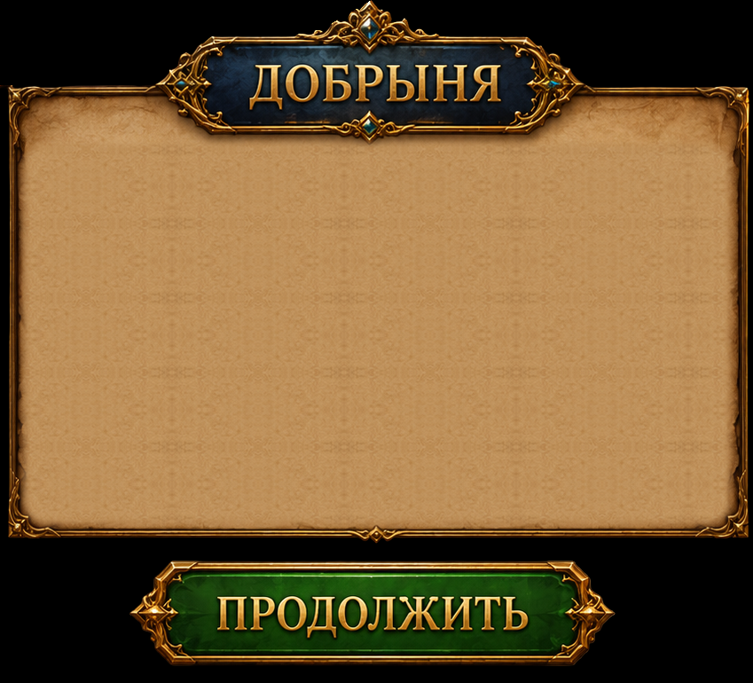
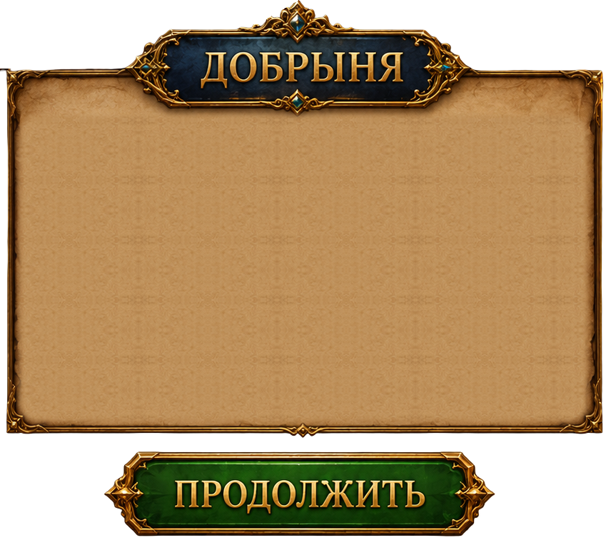
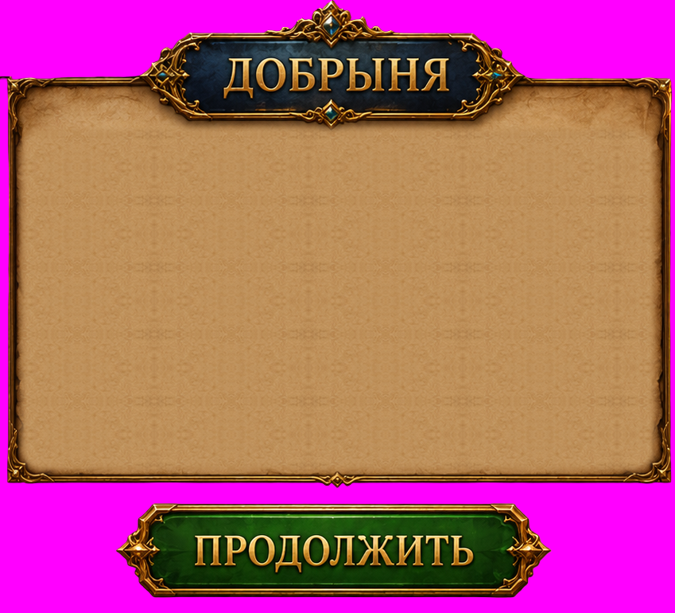

Original Russian Dobrynya nameplate and Continue caption over the existing accepted extraction alpha. The parchment, silhouettes, characters and scenery were preserved. Zero generation jobs.
Actual Unity page


